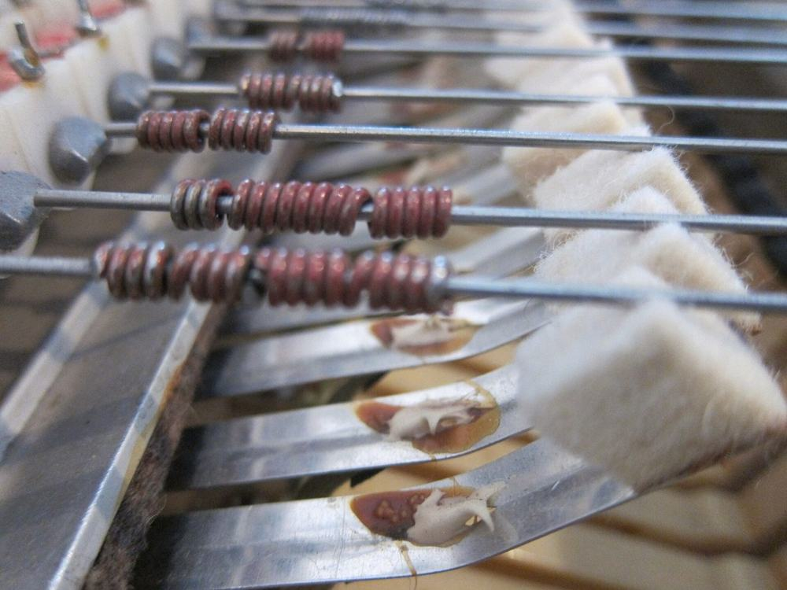
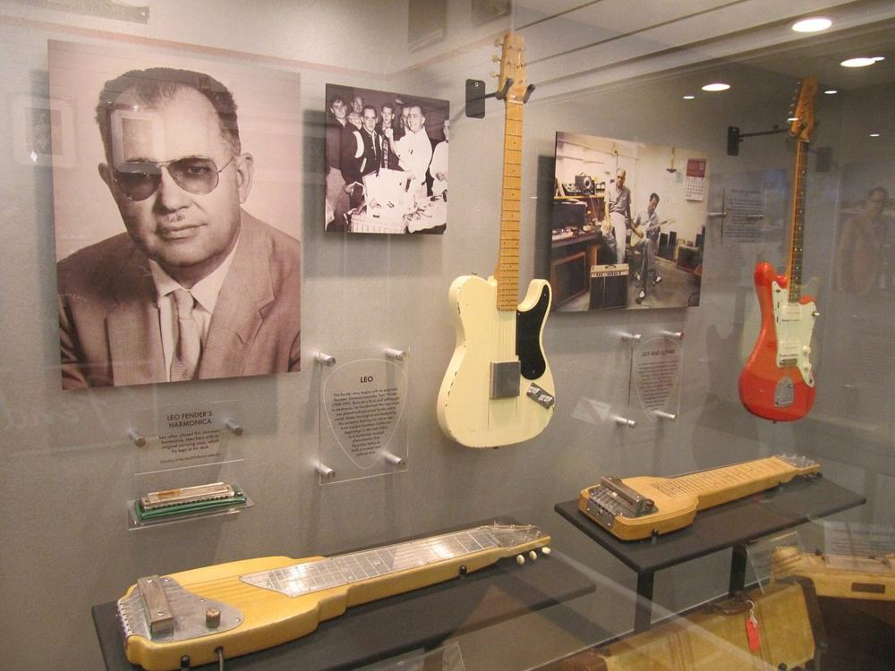

故事
爵士裡最溫暖的電鋼琴，最早是用轟炸機零件做的。二戰期間，鋼琴老師 Harold Rhodes 加入美國陸軍航空隊。他被派去教受傷、躺在病床上的軍人彈琴。
病床上放不下鋼琴，他就自己動手做。他拿 B-17 轟炸機的鋁管當音條，做出一台小鍵盤。它只有二十九個鍵，可以直接放在腿上彈。

戰後，他把這個點子繼續改良成電鋼琴。1959 年，吉他大廠的 Leo Fender 買下他的公司。後來的 Fender Rhodes，成了七十年代爵士和靈魂樂的招牌聲音。下次聽到叮叮噹噹的電鋼琴，想想那些病床上的軍人。
故事後面
Harold Rhodes 原本是鋼琴老師，二戰時在陸軍航空隊負責讓傷兵做音樂治療。他用 B-17 轟炸機的鋁管做音條，做出可以放在病床上的小鍵盤。
戰後他繼續研究，一九五九年 Leo Fender 買下他的公司。後來推出的 Fender Rhodes 電鋼琴，聲音像鐘又像鋼琴。
七十年代，Herbie Hancock、Chick Corea、Stevie Wonder 都大量使用它，這個聲音一路延續到今天的 neo-soul 和 lo-fi。

這樣聽
聽背景那個圓圓、會微微顫動的鍵盤聲，就是 Rhodes。
逐句英文
The warmest electric piano in jazz was first built from bomber parts.
During World War II, piano teacher Harold Rhodes joined the US Army Air Corps.
He was assigned to teach wounded, bedridden servicemen to play.
A piano would not fit on a hospital bed, so he built his own.
He used aluminum tubing from a B-17 bomber as tone bars for a small keyboard.
It had just 29 keys and sat right on the player's lap.
After the war he kept developing the idea into an electric piano.
In 1959, guitar maker Leo Fender bought his company.
The Fender Rhodes that followed became a signature sound of 1970s jazz and soul.
Next time you hear that chiming electric piano, think of the soldiers in hospital beds.
查證筆記與出處
「B-17 鋁管」「二十九鍵」「一九五九年 Fender 買下公司」：維基百科 Harold Rhodes 條目。條目沒寫做了幾台，稿裡不寫數量。
https://en.wikipedia.org/wiki/Harold_Rhodes_(inventor)
https://en.wikipedia.org/wiki/Rhodes_piano
https://rhodesmusic.com/the-history-of-rhodes/
一分鐘影片版在 Instagram @jazz101tw。